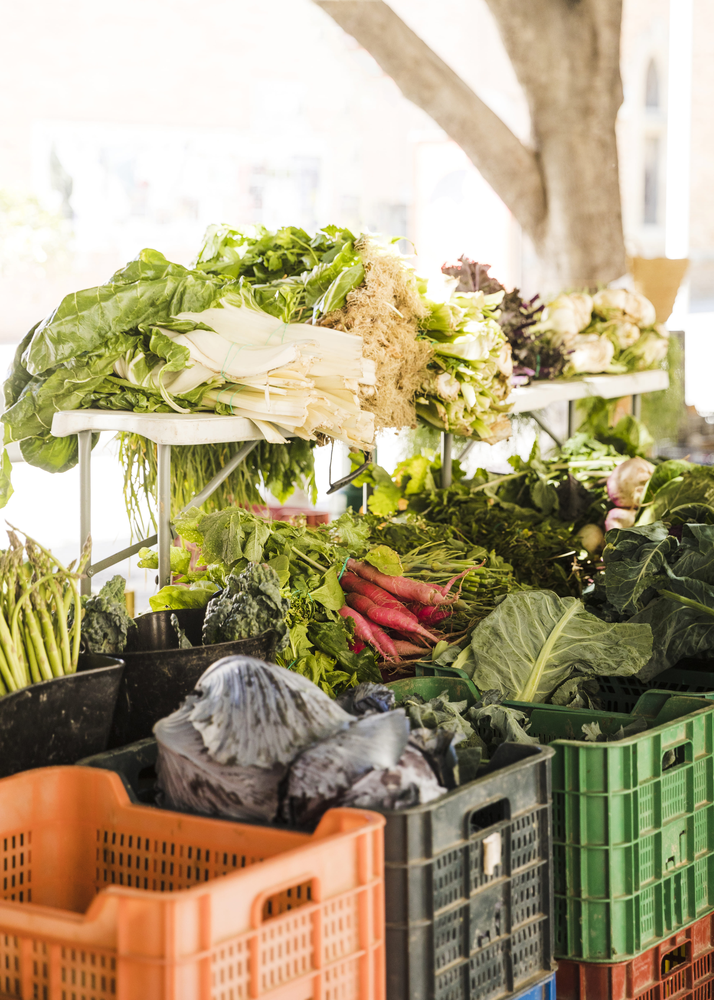

¡Descubre los mejores productos frescos, ecológicos y de proximidad en un evento único! 🌍✨
Te invitamos a disfrutar de un día lleno de sabor, sostenibilidad y apoyo
a productores locales en el mercado de productos orgánicos y locales de Puertollano.
Un espacio donde encontrarás alimentos de calidad, directamente del campo a tu mesa.
¿Que encontrarás en el mercado?
🥦 Frutas y verduras frescas de cultivo ecológico.
🥖 Panes y productos artesanales sin aditivos.
🧀 Quesos, aceites y conservas de la mejor calidad.
Actividades y experiencias:
🎤 Charlas y talleres sobre alimentación saludable y sostenibilidad.
👩🍳 Showcooking con chefs locales y degustaciones.
🎟️ Actividad gratuita. Ven a apoyar a los productores locales y disfruta de un día único..
📅 Fecha: 12 de abril de 2025
🕛 Horario: De 10:00 a 22:00
📍 Lugar: Recinto ferial de Puertollano